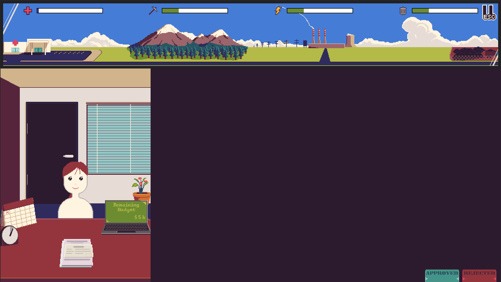
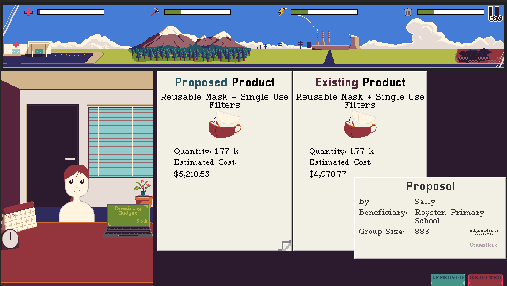
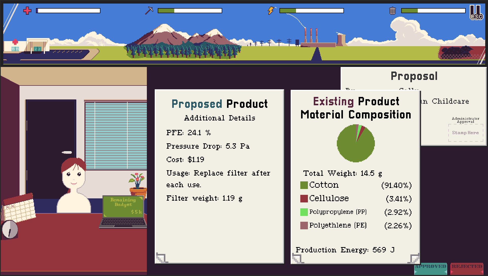
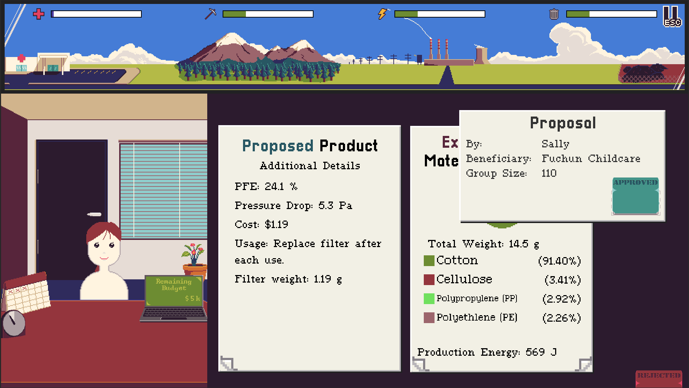
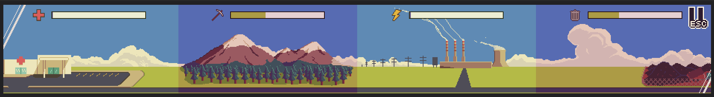
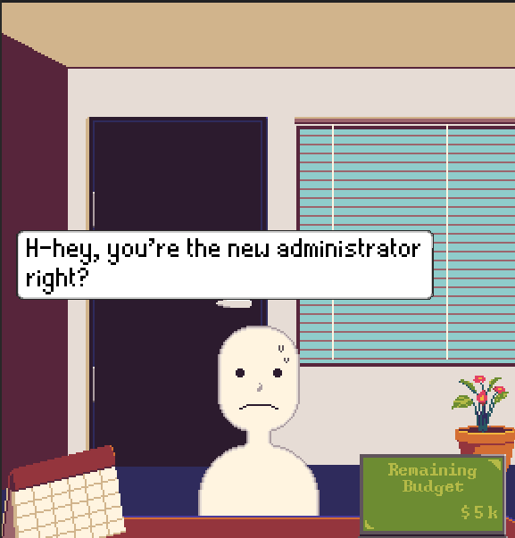

How the Game Works - Introduction
Green Development Agency(GDA) is a game whether the player has to make binary decisions on products being used in the nation. Their decisions impact the game world, and their goal is to manage the impacts of their decisions, so as to not let any problems grow out of control. The main gameplay loop is as follows:

- A proposer NPC brings to the player a proposal which consists of:
- Proposal cover/summary sheet
- Product report of an existing product
- Product report of a proposed product
 2. The player then has to look through the proposal to decide whether the proposed product should replace the existing product.
 3. Once decided, the player stamps the proposal cover with their approval/rejection and returns the proposal to the NPC.
 4. The game system then calculates the effect of the players decision and applies it to the game world.
 5. The next NPC enters and repeats 1-4, until the level ends.

Through each gameplay loop, NPCs can express certain sentiments or exhibit different behaviours, which can be customized.